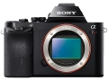
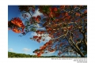
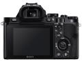
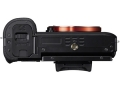
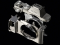
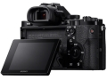
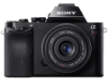

器材库 > 35mm画幅可换镜头数码相机 > α7R

规格总览
产品类型
35mm画幅可换镜头数码相机
发布日期
2013-10-16
厂家推荐价格
220,000.00 （日元）
影像规格
影像传感器
Exmor CMOS
影像传感器尺寸
35.9 × 24.0mm
总像素
3680万
有效像素
3640万
影像处理器
BIONZ X
低通滤镜
无
最大解像度
7360 x 4912
静态图像尺寸
[3:2 ] 7360 x 4912 (3600 萬)，[16:9 ] 7360 x 4144 (3000 萬)；APS-C：4800 x 3200 (1500像素)
静态图像格式
JPEG, RAW
画幅比
3:2, 16:9
短片尺寸
AVCHD：1920 x 1080 (60p/28Mbps/PS、60i/24Mbps/FX、60i/17Mbps/FH、24p/24Mbps/FX、24p/17Mbps/FH)
短片格式
MPEG4-AVC/H.264
短片音效
单声道
除尘系统
超声波除尘
镜头和对焦
镜头卡口
Sony E
对焦系统类型
对比度自动对焦
对焦点
25点
对焦模式
单次自动对焦(AF-S)、连续自动对焦 (AF-C)、直接手动 (DMF)、手动对焦
手动对焦
支持
曝光控制
测光系统
1200区光评价测光
测光模式
中央重点测光, 多分区评价测光, 点测光
测光范围
0-20EV
曝光模式
P（程序自动曝光）, 场景选择, A（光圈优先自动曝光）, S（快门速度优先自动曝光）, M（手动测光曝光）, iAUTO, 全景扫描, 视频
场景模式
夜景, 人像, 风景, 微距, 运动, 夜间人像, 夜景HDR（JPG格式）
快门类型
电子控制，纵走式，焦平面快门
快门速度
30-1/8000
曝光补偿
±5EV以(1/3 EV 或 1/2 EV )EV级调整
ISO感光度
100, 6400, 可扩展至50-25600
白平衡
日光, 白炽灯, 闪光灯, 色温调节, 阴影, 自动, 水下, 荧光灯（冷白色）, 荧光灯（日光白色）, 荧光灯（暖白色）
自拍
2秒
连拍
连拍速度为1.5张/秒，高速连拍为4张/秒。
闪光灯
内置闪光灯
无
闪光补偿
-3 至 +1EV
外接闪光灯
Sony α 系统闪光灯
取景器/显示屏
取景器
彩色XGA OLED电子取景器
取景范围
100%
取景放大倍率
0.71倍
屈光度调节范围
-4.0 至 +3.0 m-1
取景器信息
图形化显示、显示所有信息、不显示、长条图、电子水平仪
景深预视
有
LCD类型
TFT LCD
LCD尺寸
3.0英寸
LCD像素
92万
Live View
有
Live View 显示
图形化显示、显示所有信息、不显示、长条图、电子水平仪
文件输入/输出
存储卡
MS/MS PRO记忆棒, SD/SDHC, SDXC
数据接口
Mini USB
视频/音频接口
HDMI Mini 输出
无线功能
Wi-Fi, NFC
电源
电池
锂离子充电电池NP-FW50
续航能力
约270 张 (取景器) / 约340 张 (LCD )
外接电源
AC 变压器 AC-PW20
机身规格
材质
铝合金
颜色
黑色
尺寸
127×94×48mm
重量
407g
thambar2014-10-19 21:054.44 分
操作性 5.00功能性 5.00美观性 4.00趣味性 5.00耐用性 4.00性价比 5.00解像力 4.00色彩还原 3.50
wingszero2014-09-22 09:264.19 分
操作性 3.50功能性 4.00美观性 3.50趣味性 4.50耐用性 4.00性价比 4.50解像力 5.00色彩还原 4.50
ZeissIkonZI2014-05-14 15:015 分
操作性 5.00功能性 5.00美观性 5.00趣味性 5.00耐用性 5.00性价比 5.00解像力 5.00色彩还原 5.00
无处告别2014-05-13 14:284.75 分
操作性 4.50功能性 5.00美观性 4.50趣味性 5.00耐用性 4.50性价比 4.50解像力 5.00色彩还原 5.00

tainey2014-05-10 15:134.63 分
操作性 4.50功能性 5.00美观性 4.50趣味性 4.50耐用性 4.50性价比 4.00解像力 5.00色彩还原 5.00
miaoqi2014-04-25 21:104.56 分
操作性 4.50功能性 4.50美观性 5.00趣味性 4.00耐用性 4.50性价比 4.50解像力 5.00色彩还原 4.50
jsm1862014-02-12 10:254.69 分
操作性 4.50功能性 5.00美观性 5.00趣味性 5.00耐用性 4.50性价比 4.00解像力 5.00色彩还原 4.50
chrisdeen2014-01-30 19:334.75 分
操作性 4.50功能性 5.00美观性 4.00趣味性 5.00耐用性 5.00性价比 4.50解像力 5.00色彩还原 5.00
LNight2013-12-26 10:284.69 分
操作性 4.50功能性 4.50美观性 4.50趣味性 5.00耐用性 4.50性价比 5.00解像力 5.00色彩还原 4.50
家乡的小河2013-12-17 12:184.81 分
操作性 4.50功能性 5.00美观性 4.50趣味性 5.00耐用性 4.50性价比 5.00解像力 5.00色彩还原 5.00
vleepmx2013-12-02 23:094.69 分
操作性 3.50功能性 5.00美观性 4.50趣味性 5.00耐用性 4.50性价比 5.00解像力 5.00色彩还原 5.00
naughtghost2013-11-28 13:584.5 分
操作性 5.00功能性 5.00美观性 3.00趣味性 4.00耐用性 4.00性价比 5.00解像力 5.00色彩还原 5.00
maolegemi2013-11-21 01:184.94 分
操作性 5.00功能性 5.00美观性 4.50趣味性 5.00耐用性 5.00性价比 5.00解像力 5.00色彩还原 5.00
flygogo2013-11-11 21:264.94 分
操作性 4.50功能性 5.00美观性 5.00趣味性 5.00耐用性 5.00性价比 5.00解像力 5.00色彩还原 5.00
wangzx722013-11-03 19:035 分
操作性 5.00功能性 5.00美观性 5.00趣味性 5.00耐用性 5.00性价比 5.00解像力 5.00色彩还原 5.00
zhzqq0072013-10-27 23:414.75 分
操作性 4.50功能性 4.50美观性 4.50趣味性 5.00耐用性 5.00性价比 4.50解像力 5.00色彩还原 5.00
蓬头浪子2013-10-21 13:464.31 分
操作性 4.50功能性 4.50美观性 5.00趣味性 4.50耐用性 4.00性价比 3.50解像力 4.50色彩还原 4.00
蓬头浪子2013-10-21 13:29
产品图 / 样片





评测 / 相关文章
- 详细内容 （存档）
- 挑战终极画质 索尼全幅微单α7R评测 （存档）
- ［试用］A7、A7R双机双镜跨年晚会拍摄实战体验 （存档）
- ［试用］索尼全画幅微单A7R/A7的转接应用 （存档）
- ［试用］A7R摄影记 （存档）
- ［试用］谈谈旁轴镜头转接索尼A7系列全幅微单 （存档）
- ［试用］极限改装——A7R红外变身记 （存档）
- ［试用］SONY-A7R日记 （存档）
- ［资讯］手工制作的SONY-7R红木手柄 （存档）
- ［试用］A7R～镜头感最强的135数码后背 （存档）
- ［试用］索尼A7和A7R的拍摄机震对比测试 （存档）
- ［资讯］进击的杀器 索尼发布α7/α7R新固件升级 （存档）
相关文章
- ［试用］A7、A7R双机双镜跨年晚会拍摄实战体验 （存档）
- ［试用］索尼全画幅微单A7R/A7的转接应用 （存档）
- ［试用］A7R摄影记 （存档）
- ［试用］谈谈旁轴镜头转接索尼A7系列全幅微单 （存档）
- ［试用］极限改装——A7R红外变身记 （存档）
- ［试用］SONY-A7R日记 （存档）
- ［资讯］手工制作的SONY-7R红木手柄 （存档）
- ［试用］A7R～镜头感最强的135数码后背 （存档）
- ［试用］索尼A7和A7R的拍摄机震对比测试 （存档）
- ［资讯］进击的杀器 索尼发布α7/α7R新固件升级 （存档）
- ［资讯］索尼三款初代a7系列相机固件更新 （原站已下线）
- ［资讯］索尼发布相机出货短缺公告 （原站已下线）
- ［试用］索尼青年摄影师尹永宏：带着A7R去孟加拉 （原站已下线）
- ［资讯］小身材也有大能量 索尼微单选购全攻略 （存档）
- ［资讯］优化新镜头 索尼公布A7系列固件升级 （原站已下线）
- ［试用］玩玩Schneider 75mm f2 （原站已下线）
- ［资讯］α7和X-T1均爆出漏光问题 （存档）
- ［资讯］索尼全幅微单α7R完全拆解 （原站已下线）
- ［试用］索尼A7R使用感受 （原站已下线）